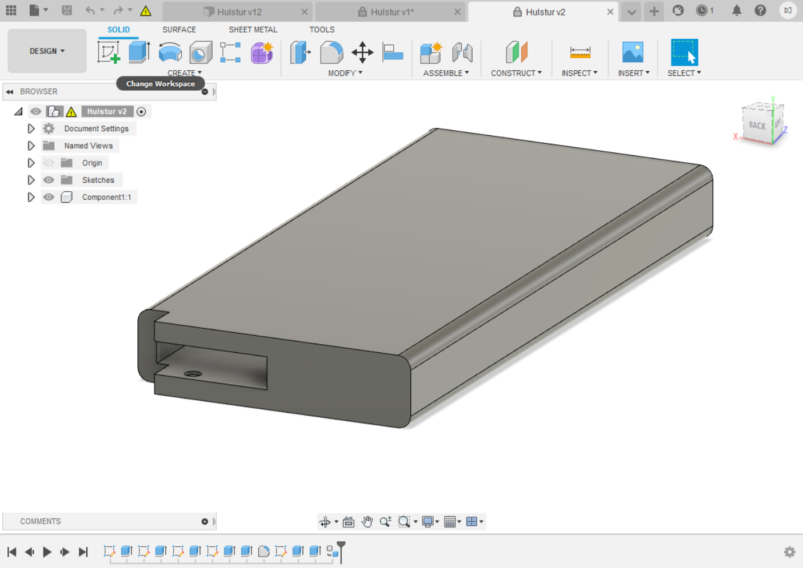

Þorsteinn Jónsson
Kortaveski
3D prentað veski fyrir kreditkort
Um verkefnið
Verkefnislýsing var svohljóðandi:
Hannaðu módel fyrir 3D prentun sem ekki væri hægt að framkvæma með frádráttar framleiðslu (addative vs subtractive). Prentaðu hlutinn (max 100g af plasti skv. slicer). 3D Skannaðu einhvern hlut, t.d. með photogrammetríu. Sýndu framvinduna á heimasíðunni þinni.
Undirbúningur
Áður en byrjað er að prenta með þrívíddarprentara er mikilvægt að vita hver takmörk prentarans eru. Til þess er gott að prenta litla prufu sem sýnir hvað prentarinn ræður við og hvað ekki. Prentun og niðurstöður þessarar prufu má sjá hér.
Mikill tími fór í hugmyndaleit. Erfitt reyndist að láta mér detta í hug eitthvað til að prenta út sem væri á sama tíma áhugavert og gagnlegt, en að lokum féllst ég á að prenta kortaveski eftir þessari fyrirmynd.
Framkvæmd
Ég byrjaði á að opna Fusion 360 og teikna upp skets að hulstrinu.
Þá gat ég extrudað sketsana og mótað fyrstu mynd af hulstrinu.
Þá teiknaði ég skets fyrir pinnann sem fellur inn í hulstrið og er notaður til að ýta kortunum út.
Ég extrudaði pinnann, bætti þrepum á hann og rúnaði svo ákveðnar brúnir á honum.
Nú gat ég bætt innfellingum í hulstrið til að setja festingar innan á það og upphleyptum punktum til að styðja við kortin.

Þá teiknaði ég skets að festingu til að setja innan í veskið.
Ég extrudaði sketsinn og extrudaði svo litla pinna út úr götunum á festingunni. Þessir pinnar eru ætlaðir til að halda við kortin svo þau renni ekki úr veskinu.
Þá bjó ég til aðra festingu sem var spegilmynd þessarar og notaði síðan parametra til að laga stærð veskisins svo kreditkort gætu passað í það.
Nú var komið að því að skreyta veskið. Ég bjá til tíglamunstur á svipaðan hátt og ég gerði fyrir vínrekkann hér áður og gerði það upphleypt í aðra hlið veskisins.
Mig langaði að setja skjaldarmerki íslands á hina hliðina. Það reyndist eilítið hægara sagt en gert, en með smá leiðsögn gat ég það.

Fyrst hlóð ég niður línuteikningu af íslenska skjaldarmerkinu. Sú teikning var auðvitað á pixel formi svo ég setti hana inn í Inkscape og notaði Trace Bitmap tólið til að búa til vector teikningu úr henni.
Þá gat ég vistað teikninguna sem .svg skrá og fært inn í Fusion 360 sem skets.
Ég notaði sketsinn til að búa til inndregna mynd af skjaldarmerkinu á hlið veskisins. Til að byrja með reyndi ég að gera þetta í eigin tölvu, en hún réð ekki við þetta þunga verk svo ég fékk að færa skjölin inn í tölvu í fablab sem éð við verkið og gera það þar. Þá var það tilbúið til prentunar


Nú þurfti ég bara að vista alla partana sem .stl skrár og færa inn í Cura þar sem ég gat ákveðið hvers konar styrkingar og stuðning ég vildi hafa og hversu nákvæmt ég vildi prenta. Ég ákvað að prenta í Utilmaker prentara því það gaf mér kost á að prenta stuðning úr vatnsleysanlegu plasti. Ég færði skjalið úr Cura og í Ultimaker prentarann og lét veskið prentast yfir nótt.


Niðurstöður
Prentunin tók um það bil 7 tíma og kom í sannleika sagt talsvert betur út en ég hafði þorað að vona. Það tók dágóða stund að leysa upp vatnsleysanlega plastið en þegar það var loks upp leyst var útlit veskisins mjög sannfærandi.


Aftur á móti kom í ljós þegar ég reyndi að setja veskið saman, að það var ekki allt eins fullkomið og á horfðist. Erfitt var að koma pinnanum inn í veskið og þegar hann loksins small í stað, þá var mjög stíft að snúa honum. Þar að auki reyndist veskið örlítið of þröngt fyrir greiðslukort svo ég neyðist til að pússa niður innri brúnirnar á veskinu ásamt hliðunum á pinnanum. Eins og stendur er ég ekki búiunn að því en það verður gert á næstu dögum, vonandi verður þá hægt að nota veskið.
3D skönnun
Auðvelt reyndist að 3D skanna með hjálp Xbox Kinect myndavélar og forritsins ReconstructMe. Einungis þurfti að tengja myndavélina og stilla fjarlægð inni í forritinu. Þá gat ég súið mér í hring framan við myndavélina og forritið bjó til þrívíddarlíkan af hausnum mínum.